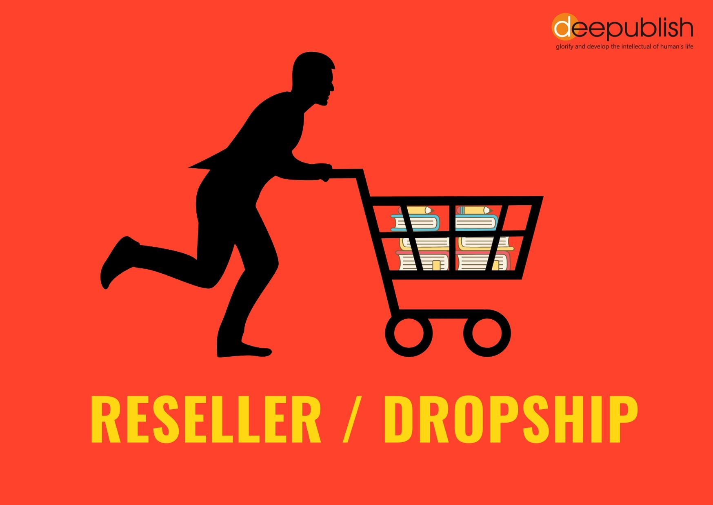

Portofolio Saya
Beberapa proyek yang pernah saya kerjakan:
TA Teknologi Hasil Pertanian
CPPB Roti Gulung Selai Nanas di UKM Alfitri Bakery, Sukoharjo.

PC Building
Merakit PC sesuai spesifikasi dan budget customer.

Reseller
Menjual produk kembali dengan strategi harga untuk keuntungan.